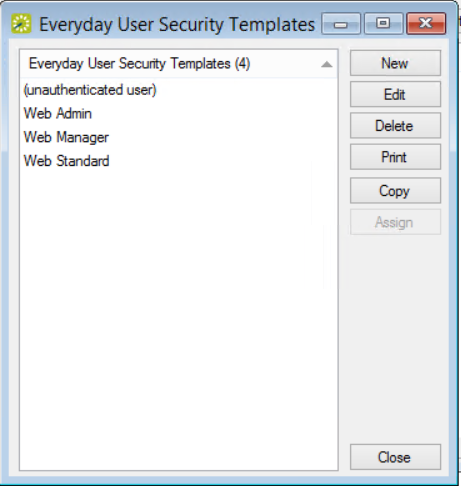

Assign Security Templates to Multiple Everyday Users
When you configure an everyday user, you can assign one security template and multiple process template to that user. Instead of assigning templates one at a time to individual everyday users, you can assign a security template to multiple users in a single step.
- On the EMS menu bar, click Configuration > Everyday User Applications > Everyday User Security Templates. The Everyday User Security Templates window opens. The window lists security templates that have been defined for your implementation. The "(unauthenticated user)" template is reserved for guest users.

- Select a security template other than "(unauthenticated user)" to assign to one or multiple users, and then click the Assign button. The Assign Security Template window opens, first prompting you to filter everyday users by status.

- Select the user status and then click Next. The Assign Security Template window updates to list users to whom you can assign the security template.

- Narrow the selection of users you wish to assign to the template using either of the following methods:
- To assign the selected security template to all the users you picked in Step 3, click the Apply to All Everyday Users checkbox.
- To assign the security template to only a few of the users you picked in Step 3, search for them in the Find field (using the other fields in this area to narrow your search), and click Display. The users who meet your search criteria are displayed in the Available list.
- On the Available list, select the user (CTRL-click to select multiple users) to whom you are assigning the template, and then Move (>) to the Selected list.
- Click Finish. A message confirms that the template was assigned successfully.
- Click OK to close the message and return to the Everyday User Security Templates window.